This project explores the design and implementation of a second-order universal active (biquad) filter supporting low-pass, high-pass, band-pass, and band-stop responses. The filter is realized across simulation, ASLK PRO kit, and PCB platforms, with performance evaluated through frequency and time-domain analysis. Emphasis is placed on gain, phase, and transient behavior, highlighting the alignment and trade-offs between theoretical and practical results in analog filter design.
7 Introduction
This project aims to design an analog universal biquad filter for a corner frequency of 1 kilohertz and a quality factor of 10. This was implemented from specification to simulation and finally to physical layout. This includes schematic design and simulation, functional modeling, and full PCB design. The utilisation of modern simulation tools and open-source platforms was immense for the developement of this project.
The key feature of this project is to focus on simulation-based design using KICAD for schematic capture and analysis of the circuit and analysing the performance in frequency and time domain. For PCB implementation and layout, the same open-source tool is used and the functional modelling of the circuit is done using Analog System Lab Kit (ASLK) and Red Pitaya. The use of Red Pitaya is mentionable as it provides a cost-effective and adaptable platform for measuring the frequency response of ALSK tool kit circuit. The design workflow also includes documentation and analysis using Quarto, Jupyter Notebooks, and supporting tools such as Python, Numpy, and Matplotlib. All components of this project are managed using Git and documented in reproducible formats.
NOTE: All design files, source code, and documentation are shared publicaly under our GITHUB repository.
8 Motivation
For many real life applications like audio processing, sensor signal conditioning and instrumentation, the signals can be corrupt due to unwanted noise and interference of the signals. One of the most important solution would be the use of filters especially analog filters with which it can be used to clean and shape signals before they are digitized or processed further.
The use of analog filter are advantageous over digital filters, even though it is way more flexible and programmable, because it has better power consumption, size, or cost constraints. Among analog filters, the biquad filter gets highlighted for its Second-order response which allows a precise control over frequency characteristics, flexibility to configure it as a low-pass, high-pass, band-pass or band-stop filters and its stability when implemented using op-amps and passive components.
This project focuses on designing, simulating, and implementing a biquad filter, using KiCad for schematic design, simulation, and PCB layout and ALSK tool kit for practical filter implementation and behavioral response testing using Red Pitaya. This whole projects motivates to have an understanding of how analog filters are practically implemented using op-amps, learn PCB design basics and fabrication, learn the usage of KICAD tool as well as integrating tools like ALSK and Red Pitaya into the design loop. Finally it gives a complete analog design experience, from concept to functional hardware, reinforcing both theoretical understanding and practical skills in analog electronics and system prototyping.
9 Basics of Filter Design
Filters, as the name suggests, is used to filter out the unwanted signals. Based on different fields, its usage is also different like in analog electronics, they can be used to shape certain signals while attenuating other. Other applications of filters are to remove noise to improve the signals quality in certain fields like audio processing, biomedical instrumentation, communication systems, or sensor signal conditioning.
9.1 Types of Filters
There are four types of filters which are low pass filter, high pass filter, band pass filter and band stop filter or notch filter. Filters are classified based on allowing or blocking different band of frequencies. They treat different frequencies of the spectrum in various ways [1]. The low pass filter allows the low frequency signals to pass through the filter and attenuates the higher frequency signals. Whereas high pass filter works just the opposite of this by allowing the high frequency signals to pass through the filter and attenuates the low frequency signals. Band pass filter passes a specific range of frequencies and attenuates the rest and the band stop cuts off a specific range of signals and allows the rest to pass through the filter. The frequency response of each filters are Figure 9.1 for a better understanding of the types of filters:
Figure 9.1: Ideal Frequency Response Graph
9.2 Defining Standard Design Specifications
There are some terminologies to keep in mind when taking about filter designing, namely cutoff frequency, order of the circuit and roll off which is defined below.
9.2.1 Cut-off frequency
It is the frequency at which the filter starts to significantly reduce the signal strength. It is also known as corner frequency or break frequency [2] and can be determined by the formula:
\[
f_c = \frac{1}{2 \pi R C}
\]
where: - \(f_c\) is the cutoff frequency (in Hz), - \(R\) is the resistance (in ohms), - \(C\) is the capacitance (in farads).
The cut-off frequency is a key parameter in filter design and determines the point at which the output signal falls to 70.7% of the input or from the frequency response curve or bode plot, it is -3dB (20 log (Vout/Vin)) of the input Figure 9.2.
9.2.2 Roll-off
It is determined to measure the rate at which the filter attenuated the signal after the cut-off frequency [3]. More steeper the roll-off factor more better the filter works. So in order to increase this factor we need to look into other parameter called the order of the filter.
Figure 9.2: Filter Response Characteristics
9.2.3 Order of Filter
The order of a filter is determined by the number of reactive elements in the circuit like capacitance or inductance [4]. As we add one reactive element more, we increase the maximum roll-off by 20 db/decade. So the key point here is to add more reactive elements in order to increase the order of the filter but this increase affects other parameter like phase shifting, as order increases phase shift increases. So we can’t increase it as much as we can.
9.2.4 Bandwidth
It is the range of frequencies that passes through the filter without attenuation [1]. The bandwidth can be calculated by taking the difference of the frequnecies at -3db gain as shown in Figure 9.3\[
BW = f_2 - f_1
\] The bandwidth of low pass filter can be frequnecy at 3db and for band pass it is as shown above while it is not defined for band stop and high pass filters.
Figure 9.3: Q Factor and Bandwidth
9.2.5 Q Factor
It is used to measure how well a filter isolates a desired frequency band while attenuating other frequency ranges. This factor affects the bandpass and bandstop filters. As the bandwidth becomes narrower the Q-factor increases which denotes a higher selection of frequency to pass or stop. This can be calculated by
\[
Q = \frac {f_0} {BW}
\]
where, \(Q\) is the quality factor \(f_0\) is the cut-off frequency \(BW\) is the bandwith
But the increase in quality factor can show undesirable oscillation and bring more instability to the circuit. Also the values of passive components like resistor and capacitors affect the performance. Practically acheiving high Q-factor is difficult due to the limited component quality and manufacturing tolerances.
10 Biquads
A biquad filter is a second-order active filter commonly used for building all the four types of filters LPF, HPF, BPF, and BSF. The term “biquad” comes from bi-quadratic, meaning the transfer function contains up to \(s^2\) in both numerator and denominator. It provides better control over gain, Q (quality factor), and center/cutoff frequency than first-order filters. Moreover as we increase the order by one, we increase the maximum roll off by 20 db/decade. The general transfer function can be written as: \[
H(s) = \frac{b_0 + b_1 s + b_2 s^2}{a_0 + a_1 s + a_2 s^2}
\]
The structure of the transfer function tells us how the frequency components of the input signal are modified, how poles and zeros determine the frequency response, how component values (R, C) and op-amp behavior affect real-world performance.
10.1 Topology
There are mainly two types of topologies for designing a second order analog filter, they are Sallen-Key topology and Multiple feedback biquad topology. MFB is generally used to design high Q factor and high gain circuits and in our project we aim to design a biquad filter with quality factor 10. The need for a high quality factor in our design led us to select Multiple Feedback Biquad (MFB) topology developed by Texas Instruments [5].
10.2 Transfer Function
Let us take transfer function into consideration as it helps to analyse the filter performance based on the component values used in the circuit. Transfer function in general can be defined as: \[
H(s)= \frac{V_{\text{out}} (s)}{V_{\text{in}} (s)}
\]
Consider the circuit diagram for second order low pass filter Figure 10.1
Figure 10.1: Second order MFB low pass filter
In this MFB low pass filter, we use the op-amp in inverting configuration. \(R_1\) and \(R_3\) are input and feedback resistors and \(R_2\) is part of feedback loop. \(C_1\) and \(C_2\) are frequency controlling capacitors [6]. We can use nodal analysis for finding the transfer function. According to Kirchhoff’s Current Law (KCL), we can write the eqaution as :
\[
\frac{V_{in}}{R_1} + s C_2 V_{in} + \frac{V_{out}}{R_2} + s C_1 V_{out} = \frac{0}{R_3} \approx 0
\] In ideal op-amp we assume that \(V_-\) and \(V_+\) are 0. So when solving this equation we come up with the transfer function for MFB low pass filter with a gain \(H_0\),
\[
\frac{V_{out}(s)}{V_{in}(s)} = H_0 \cdot \frac{\omega_0^2}{s^2 + \frac{\omega_0}{Q} s + \omega_0^2}
\] So the transfer function of a low pass circuit would be: \[
H(s) = \frac{H_0 \cdot \omega_0^2}{s^2 + \frac{\omega_0}{Q}s + \omega_0^2}
\]
Similarly we can derive for high pass, bandpass and band stop which are:
This section models the behavior of a second-order band-pass filter using the transfer function derived from a general second-order circuit. Since the filter was designed with zero gain (i.e., \(H_0 = 1\)), the focus is on the shape of the response rather than amplification.
The band-pass filter transfer function is given by:
With \(H_0 = 1\), the final simulation model becomes:
\[
H(s) = \frac{s / Q}{s^2 + s / Q + 1}
\]
This normalized second-order band-pass filter exhibits a peak at the resonant frequency \(\omega_0\), with sharpness controlled by \(Q\)Figure 13.1.
Figure 11.1: Frequency Response of Second-Order BPF
Figure 11.2: Step Response of Second-Order BPF
The filter has unity gain, as expected from the design. The Bode plot shows a peak at 1000 Hz, confirming the resonant frequency. The accompanying phase response reveals how the phase of the output signal shifts relative to the input across different frequencies. In band-pass filters, this phase shift is steepest near the resonant frequency, indicating a rapid change in the system’s reactive behavior. This characteristic is crucial in applications involving signal timing, modulation, or phase-sensitive detection. The step response Figure 11.2 shows damped oscillations typical of underdamped second-order systems with high Q.
This behavioral model validates the expected frequency and time-domain characteristics of a second-order band-pass filter. It helps verify that the circuit design aligns with theoretical predictions before practical implementation.
12 Filter Design
A second-order band-pass filter was chosen for its frequency-selective properties, making it ideal for isolating a narrow frequency band around a target center frequency. The topology used was MFB (Multiple Feedback Biquad). It allows simultaneous extraction of LPF, HPF, BPF, and BSF outputs from a single op-amp-based structure.
The filter was designed to achieve a center frequency of 1000 Hz, with a quality factor \(𝑄 = 10\) to emphasize selectivity. A unity gain was selected to focus the design on shaping the frequency response rather than amplification. The resistance and capacitance values were determined using the following equation.
The TL082 dual JFET-input op-amp was selected for its high slew rate and wide bandwidth, making it suitable for audio- and low-frequency analog filtering. Its availability in the ASLK PRO kit further streamlined practical implementation.
The following code can also be used to calculate the required capacitor value given a desired resistance, center frequency, and quality factor.
Code
import numpy as npdef calculate_resistances(f0, Q, C):""" Calculate required resistor values (R2 and R3) for the given center frequency (f0), quality factor (Q), and capacitances C1, C2. """ w0 =2* np.pi*f0 R =1/ (w0 * C)return R# Example valuesf0 =1000# HzQ =10# Quality factorC =0.01e-6# FaradsR = calculate_resistances(f0, Q, C)print(f"Calculated R: {R:.0f} Ω")
Calculated R: 15915 Ω
This utility provides practical flexibility in component selection by enabling capacitance tuning based on resistor availability.
13 Signals and Systems Analysis
This section discusses the signal behavior of second-order filters in both the time and frequency domains. The analysis is essential to understanding how filters affect different frequency components of an input signal, as well as how their internal characteristics—such as pole and zero placement—impact signal shaping.
13.1 Frequency Domain Behavior
In the frequency domain, filters modify both the amplitude and phase of signals.
Amplitude Response (Magnitude): Describes how much of each frequency component is passed or attenuated by the filter. For instance, a low-pass filter significantly attenuates frequencies above the cutoff.
Phase Response: Indicates the phase shift introduced at each frequency. This is crucial in systems involving synchronization, feedback, or modulation.
A general second-order filter can be described by the transfer function:
\(\omega_0 = 2\pi f_0\): natural (resonant) angular frequency
\(Q\): quality factor, controls sharpness of resonance
\(s\): Laplace variable
These responses are typically visualized using a Bode plot, which shows:
Magnitude (in dB) vs Frequency (on a logarithmic scale)
Phase (in degrees) vs Frequency
These characteristics help identify the filter’s behavior around its cutoff frequency (or resonant frequency in the case of BPF/BSF), and how sharply it attenuates beyond that point (roll-off).
13.2 Poles, Zeros, and Filter Shape
Every transfer function \(H(s)\) has poles and zeros:
Poles: Frequencies where the system naturally resonates. These are found where the denominator of \(H(s)\) becomes zero. A pole near the imaginary axis in the s-plane contributes to peaking in frequency response. They define stability, resonant peaks, and bandwidth.
Zeros: Frequencies that the system inherently blocks. Found where the numerator of \(H(s)\) is zero or they can be defined as frequencies where gain drops to zero.
The placement of poles and zeros determines:
The bandwidth (spread of frequencies passed or attenuated)
The sharpness of transitions (defined by the Q factor)
The stability of the system
Higher-order filters (more poles) exhibit steeper roll-offs but may introduce more phase distortion.
13.3 Time Domain: Steady-State vs Transient Response
Transient Response is how the filter initially reacts to an input signal like a step or pulse. It’s important for understanding startup behavior and stability.
For example, a high-Q band-pass filter may exhibit ringing—a decaying oscillation—when subjected to a step input.
Steady-State Response is the long-term behavior once transients have settled. This represents the filter’s typical operating condition.
The time-domain behavior is often evaluated using:
Step Response: Output when a step input is applied
Impulse Response: Output when a very short signal is applied
These help validate how energy is stored and released in reactive components (capacitors and inductors).
13.4 Interpretation in Practice
For LPF: Signals below cutoff pass with minimal phase shift; high frequencies are both attenuated and phase-shifted.
For HPF: High frequencies pass clearly, but low-frequency components are delayed and attenuated.
BPF emphasizes a narrow band; shows a sharp peak and steep drop outside the passband.
BSF suppresses a narrow frequency band while passing others, with a dip in gain around the notch frequency.
Both gain and phase responses are vital in system design, especially in:
Audio filtering
Signal conditioning
Modulation/demodulation circuits
Feedback and control systems
13.5 Visualization
Below is a sample image used to visualize gain and phase responses for different filter types based on their transfer functions.
Figure 13.1: Bode Magnitude and Phase Response for Second-Order Filters
This analysis connects theoretical filter modeling to practical signal behavior, reinforcing both design accuracy and signal integrity across platforms.
14 Op-amp Theory
14.1 Basic Op- amp theory
Op-amp or operational amplifiers are voltage amplifying devices designed to be used with external feedback components like resistors, capacitors based on its need. These are three terminal devices with an output and two inputs, one inverting (marked with a negative sign) and one non-inverting (marked with a positive sign)[4].
14.1.1 Rules of Op-amp:
RULE 1: No current flows in or out of the op-amp. Whatever input we give through the inverting or non-inverting terminals, it doesnot go inside of the op-amp for it to work. But works with the other voltage input we give into it.
RULE 2: The output of the op-amp always tries to make the voltage difference between the two input pin to 0V.
We usually won’t use op-amp alone without any elements connected because by nature its amplification property is so high that we need some other elements to reduce it. It can amplify both analog and digital signals making it usable for multiple applications.
14.1.2 Different op-amp configurations
There are multiple configurations for op-amp. Here we are only listing two of them as we only use these configurations in the biquad circuit we design.
14.1.2.1 Inverting op-amp:
We give input to the inverting input terminal of the op-amp, thus the name inverting op-amp configuration. We also give feedback from the output to this same input terminal as given in Figure 14.1
Figure 14.1: Inverting Op-Amp Circuit
According to rule 2, output volatge always tries ot make the two inputs the same or the difefernce between them as 0V. That means \(V_2\) here would can be called as virtual ground since \(V_1\) is connected to the ground.
Lets see how this gives us an amplification with an example. Say, \(R_{\text{in}}\) is 1V as its values is \(1\,\text{k}\Omega\) and \(R_F\) is 10V as this has a value of \(10\,\text{k}\Omega\). Now we give an input of 1V, so 1A current flows across \(R_{\text{in}}\). Now based on rule 1, current does not flow inside the op-amp so it has to flow to \(R_F\). Thus the voltage drop across it would be 10V. With repsct to the groung it enters with a +10V and so we get -10V in the other terminal, resulting in a -10V output.
When deriving this with equations: \[
I_{{R_{\text{in}}}}= I_{{R_F}}
\]\[
\frac{V_{\text{in}} - V_2}{R_{\text{in}}} = \frac{V_2 - V_{\text{out}}}{R_F}
\]
\[
\frac{V_{\text{in}} - 0}{R_{\text{in}}} = \frac{0 - V_{\text{out}}}{R_F}
\] Since x is virtual ground, we can give 0V to it.
\[
\frac{V_{\text{out}}}{V_{\text{in}}} = \frac{-R_F}{R_{\text{in}}}
\]\[
A = \frac{-R_F}{R_{\text{in}}}
\]
14.1.2.2 Integrator
This op-amp gives us an integrated value of the input as output for the circuit. For acheiving this we just replaced the \(R_F\) resistor with a capacitor as given in Figure 14.2
Figure 14.2: Op-Amp as Integrator
Here also we can give a 1V input and the current flowing across the \(R_{\text{in}}\) is 1A as its value is \(1\,\text{k}\Omega\). Because of rule 1, current flows in through the capacitor and it tries to charge. As we give a positive input capacitor charges negatively and vise versa. Meaning when we give a square wave in the input we get a triangular wave which is the integrated output for a square wave. When calculated using the equations, we get:
In the simulation we are using TL082 op-amp for designing the biquad. The TL082 is a widely used JFET-input operational amplifier known for its low input bias current and wide bandwidth. However, when designing analog filters, we need to think about its specifications:
Slew Rate: It detemines the fastness of change in output voltage which can affect the performance of high frequency signals.The TL082 has a typical slew rate of 13 V/µs.
Gain Bandwidth Product (GBW): The product of gain and frequency is a constant. For example, if the op-amp is used in a configuration with gain = 10, the bandwidth drops to 300 kHz.
Input Offset Voltage: It can slightly shift DC operating points in precision circuits. It is around 3 mV.
Input Bias Current: It is lower than typical BJT-input op-amps because of the JFET inputs. Its value is 65 nA.
Output Voltage Swing: The output doesn’t swing fully to the rails. Usually, it can swing from about ±12V when powered with ±15V.
Power Supply Range:It operates from ±3V to ±18V, or a single supply from 6V to 36V [7].
In this project, the design of a biquad filter requires the use of an operational amplifier (op-amp) as a fundamental component. Passive components alone (resistors and capacitors) cannot achieve the desired performance when sharp frequency selectivity and amplification are involved. The op-amp provides the necessary gain and feedback to construct second-order filter behavior, enabling sharper transitions and resonance at the target frequency. Without an op-amp, it would be difficult to achieve a stable, high-Q response, especially with the narrow bandwidth required in this design. For the implementation we are using TL082 beacuse of its balance in performance, availability, and compatibility with analog filter requirements.
Overall, the TL082 offers a great performance and moreover easiness to use. It meets all the necessary design constraints for designing an analog active filter biquad on PCB while remaining simple to work with in both simulation (KiCAD) and practical experiments (Red Pitaya, ASLK Pro).
15 Circuit Design and Layout
This section illustrates the hardware implementation of the biquad filter using KiCad and includes schematic capture, PCB layout (top and bottom), and relevant design constraints.
15.1 Schematic Capture
Below is the schematic created in KiCad for the implementation of the biquad filter circuit.
Figure 15.1: Biquad Kicad Schematic
15.2 PCB Layout
The following images Figure 15.2, Figure 15.3, Figure 15.4 show the PCB layout used in the design, including the top and bottom routing diagrams. We used surface mount resistors and capacitors(SMD) while for other components, through hole technology(THT) was selected for integration.
Figure 15.2: Biquad PCB Layout
Figure 15.3: Biquad PCB Top layer Routing
Figure 15.4: Biquad PCB Bottom layer Routing
The PCB design follows the following specifications: - Minimum trace width: 0.635 mm - Placement of decoupling capacitors close to op-amps
To validate the circuit’s performance, we tested the same design using the ASLK Pro kit and Red Pitaya as signal source and oscilloscope. The following picture Figure 15.5 shows the portion of the ASLK Pro board used to construct the biquad filter circuit.
Figure 15.5: ASLK Pro Setup
Red Pitaya was used to inject signals and monitor the filter output. The board acted as both a function generator and an oscilloscope. A basic block setup is given in the illustraion Figure 15.6 below for better understanding.
Figure 15.6: Red Pitaya Setup
We tested the circuit using: - Input waveforms: sine waves at frequncies ranging from 500 to 2000Hz. - Amplitude: 1 V peak-to-peak (OUT1) - Visualization: Red Pitaya’s web scope and exported .csv data
16 Results
16.1 Experimental Setup
In this section, we describe the methods used for testing the biquad filter across different platforms:
Simulation:
Implemented using KiCad and simulated via ngspice.
Frequency response obtained using .ac dec directive.
Output exported and analyzed using Python for frequency and phase plots.
ASLK Pro Kit:
Assembled filter on ASLK Pro board with TL082 op-amps.
Function generator output set to sine wave (0.9 V peak-to-peak).
Measurements captured from the LPF, HPF, BPF, and BSF outputs.
Output analysis performed with Red Pitaya and graphs were generated using python.
16.2 Frequency Analysis
16.2.1 LPF
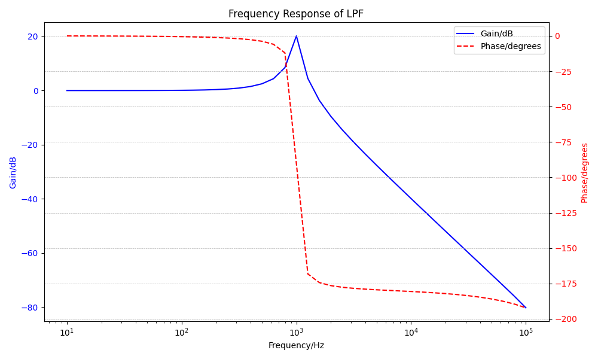
Figure 16.1: Simulation Frequency Response
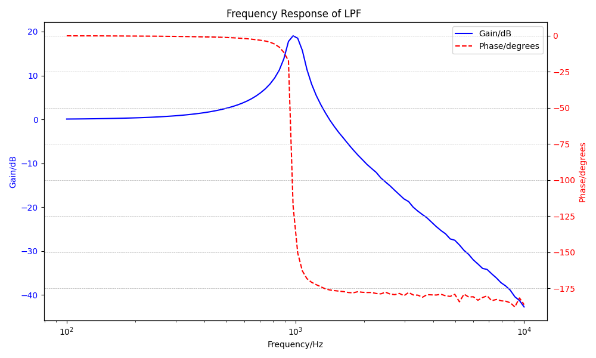
Figure 16.2: Kit Frequency Response
16.2.2 HPF
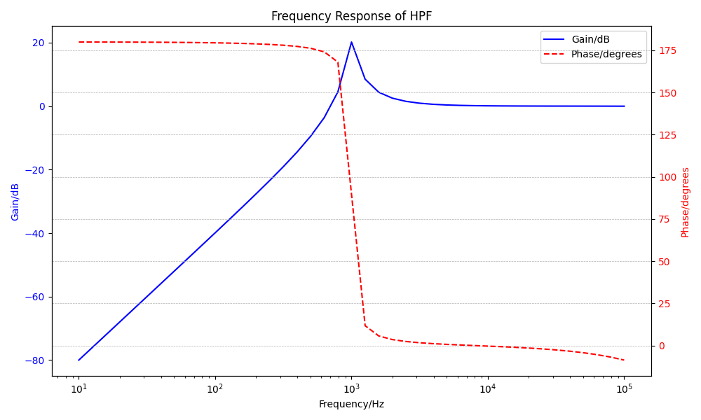
Figure 16.3: Simulation Frequency Response
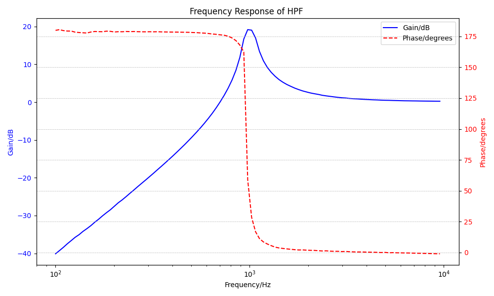
Figure 16.4: Kit Frequency Response
16.2.3 BPF
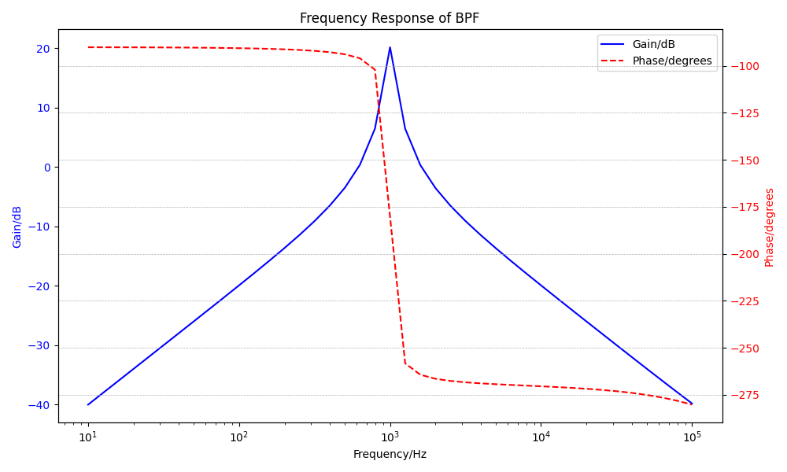
Figure 16.5: Simulation Frequency Response
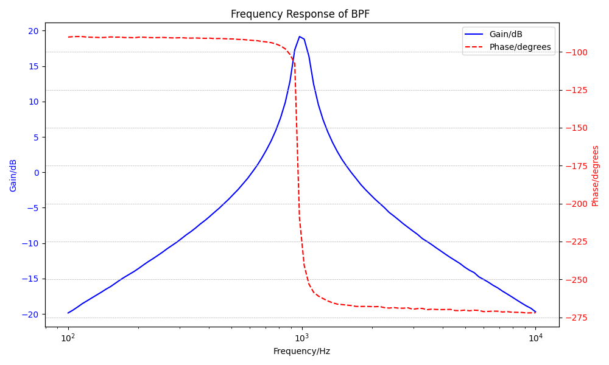
Figure 16.6: Kit Frequency Response
From the csv file we can get - Center frequency (f₀): 1000 Hz - Peak amplitude: 20.1755 dB
For calculating the bandwidth, we need to find the frequencies where the response is 3dB below the peak. Upper -3dB point would be 1056.6 Hz and lower -3dB point would be 954.8 Hz. So bandwidth is the difference between them. It is: \[
BW = |f_{upper} - f_{lower}|
\] BW= 1056.6-954.8 = 101.80 Hz
From the csv file we can get - Center frequency (f₀): 977.01 Hz - Peak amplitude: 19.17 dB
For calculating the bandwidth, we need to find the frequencies where the response is 3dB below the peak. Upper -3dB point would be 1076.837 Hz and lower -3dB point would be 921.75 Hz. So bandwidth is the difference between them. It is: \[
BW = |f_{upper} - f_{lower}|
\] BW= 1076.837-921.75 = 154.96 Hz
The possible causes would be: - KiCad uses ideal components, while real resistors/capacitors have tolerances (e.g., ±5%–10%). - PCB traces add stray capacitance (1–5 pF) and inductance, altering filter response. - KiCad assumes perfect power; real supplies have ripple.
16.2.4 BSF
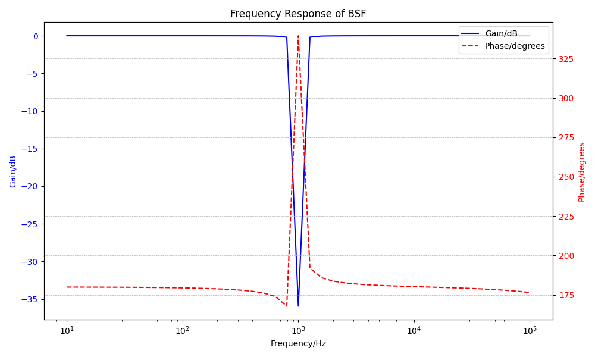
Figure 16.7: Simulation Frequency Response
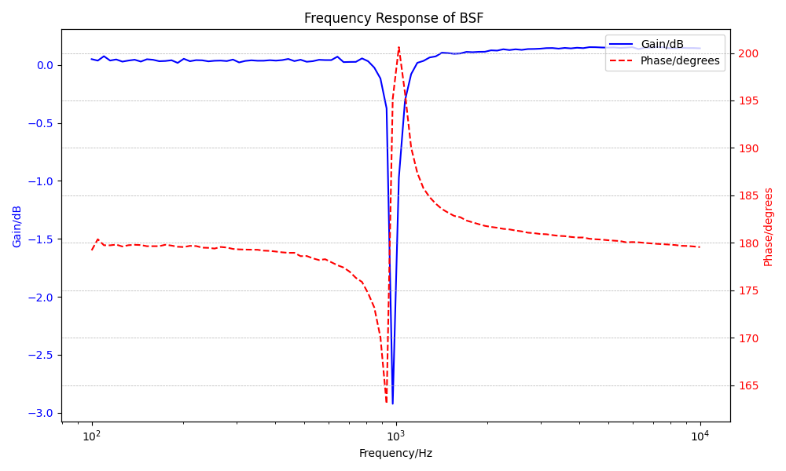
Figure 16.8: Kit Frequency Response
The frequency response of the biquad filter across simulation and ASLK Pro implementation shows expected filter behaviors for all configurations (LPF, HPF, BPF, BSF). In practice, both the LPF and HPF exhibited steeper slopes compared to simulation, likely due to parasitic effects and non-ideal op-amp behavior. The BPF and BSF responses confirmed correct center and notch frequencies around 1 kHz, with minor deviations in amplitude and phase caused by component tolerances and real-world limitations.
16.3 Transient Analysis
16.3.1 LPF
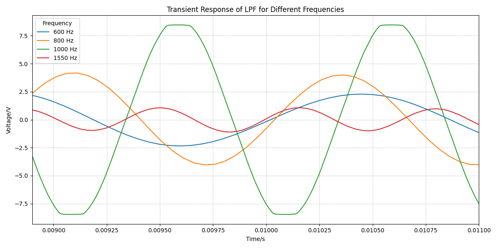
Figure 16.9: Simulation Transient Response
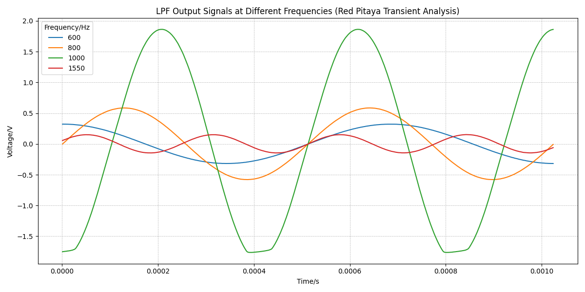
Figure 16.10: Kit Transient Response
16.3.2 HPF
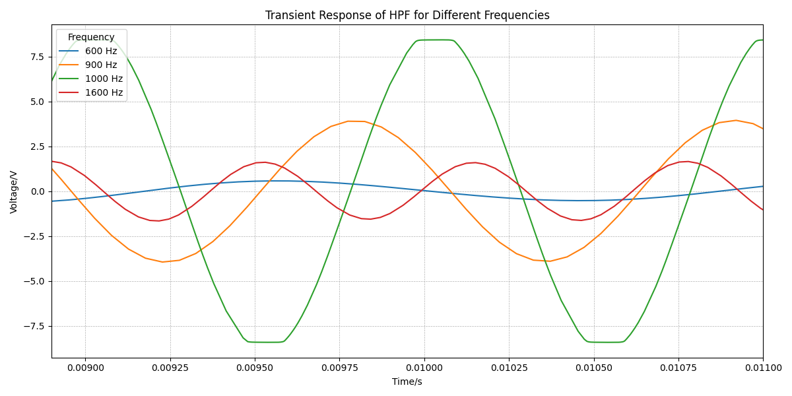
Figure 16.11: Simulation Transient Response
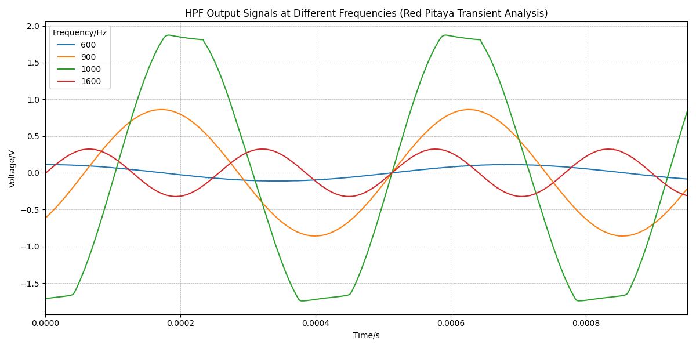
Figure 16.12: Kit Transient Response
16.3.3 BPF
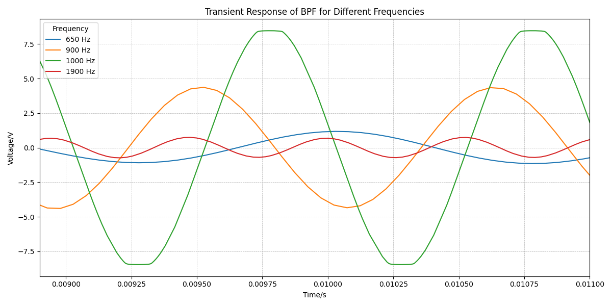
Figure 16.13: Simulation Transient Response
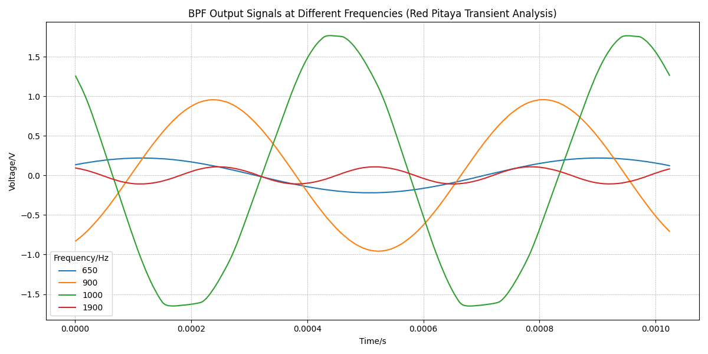
Figure 16.14: Kit Transient Response
16.3.4 BSF
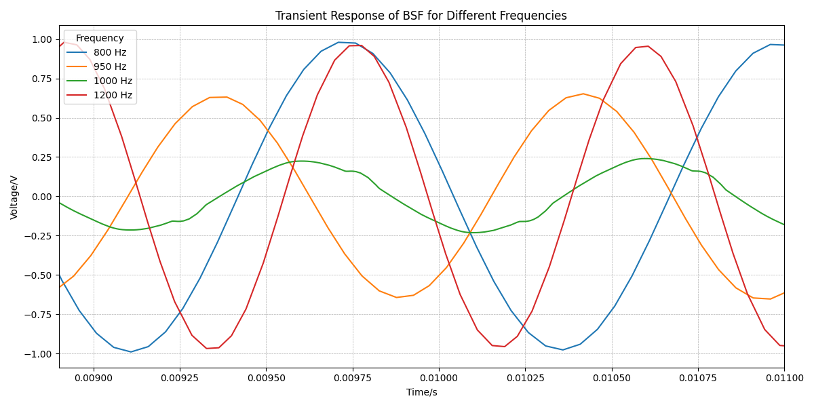
Figure 16.15: Simulation Transient Response
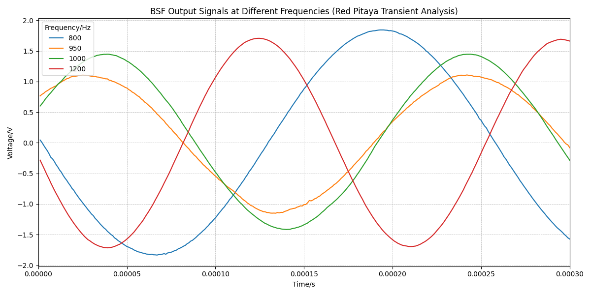
Figure 16.16: Kit Transient Response
Transient analysis for each filter type demonstrated good alignment between simulation and physical implementation. LPF and HPF showed clean responses with minor differences in rise time and settling due to hardware constraints. The BPF displayed underdamped oscillations as expected, while the BSF combined characteristics of LPF and HPF with slightly altered phase behavior in the practical setup. Overall, the filters behaved as intended with predictable real-world variations.
17 Trouble Shooting and Mistakes
During our course of the project work, we have faced a few issues while implementing the biquad filter in ALSK as well as in KiCAD while designing the schematic diagram and the PCB. Some of them are listed below.
Initially, while implementing the circuit in ALSK pro kit, the output we could get in using the red pitaya was just some noises for all the filter types. When observed closely we found out the need to connect a wire physically in the board from non-inverting terminal of the op-amp to the ground for the two op-amps in op-amp type II full section of the ALSK pro board. Whereas the other two op-amp were internally connected to ground.
Both the PCBs that have designed didn’t give us any output as the we try to measure it using the red pitaya.
On observation it was found that the PIN no 5 and PIN 6 got interchanged in KiCAD as shown in Figure 17.1 even after importing the netlist from the schematic which was working.
Figure 17.1: Pin interchange
Another mistake that occured was while designing the schematic diagram in PCB, the op-amp imported had the inverting terminal connected to the ground. Even after connecting the whole circuit with that configuration, the schematic diagram in KiCAD gave the output and so didn’t cross checked for any mistakes. Thus ending up downloading the same netlist and designed a PCB with changed pins. Even then tried to obtain the output by giving externals connection vai a bread board, still no results were obtained.
18 Discussion
The design and implementation of the second-order universal biquad filter provided critical insights into analog signal processing, specifically in how component selection and topology influence filter behavior. Through both simulation and hardware implementation, it became clear how closely the theoretical transfer functions—derived using Laplace and frequency-domain analysis—align with real-world performance. However, discrepancies due to parasitic effects, op-amp limitations, and component tolerances were evident in the practical responses, highlighting the importance of accounting for non-idealities in real-world systems.
During the project, several mistakes were made, particularly in calculating component values to achieve the target quality factor (Q = 10). Early designs also neglected phase behavior, which became apparent during Red Pitaya measurements. These issues required redesign and additional simulation runs. These challenges, while initially frustrating, were ultimately educational—they deepened our understanding of pole-zero placement, transient response, and filter sensitivity. The iterative process reinforced the importance of simulation-validation cycles and careful documentation throughout the design workflow.
---title: "Design and Implementation of a Universal Biquad Filter"author: - name: Nilina Rose Sony orcid: email: rosesonynilina@gmail.com corresponding: true roles: "Lead author" affiliation: - name: Hochschule Bremen - City University of Applied Sciences (HSB) city: Bremen state: Germany url: https://www.hs-bremen.de - name: Ian Gabriel orcid: email: 911iangab44@gmail.com corresponding: true roles: "Lead author" keyword: - Filter Design - PCBbibliography: references.bibabstract: | This project explores the design and implementation of a second-order universal active (biquad) filter supporting low-pass, high-pass, band-pass, and band-stop responses. The filter is realized across simulation, ASLK PRO kit, and PCB platforms, with performance evaluated through frequency and time-domain analysis. Emphasis is placed on gain, phase, and transient behavior, highlighting the alignment and trade-offs between theoretical and practical results in analog filter design.---{{< include content/_1.sec_introduction.qmd >}}{{< include content/_2.sec_motivation.qmd >}}{{< include content/_3.sec_basicsoffilterdesign.qmd >}}{{< include content/_4.sec_biquads.qmd >}}{{< include content/_5.sec_behaviouralmodelling.qmd >}}{{< include content/_6.sec_filterdesign.qmd >}}{{< include content/_7.sec_signalsandsystemanalysis.qmd >}}{{< include content/_8.sec_basicopamptheory.qmd >}}{{< include content/_9.sec_circuitdesignandlayout.qmd >}}{{< include content/_10.sec_result.qmd >}}{{< include content/_11.sec_troubleshooting.qmd >}}{{< include content/_12.sec_discussion.qmd >}}